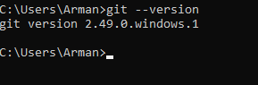
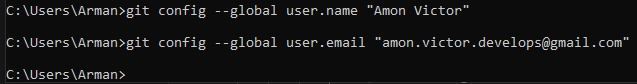
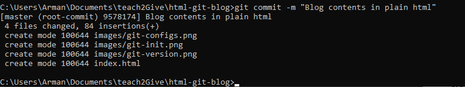
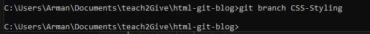
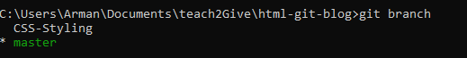
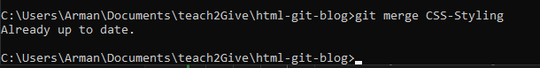
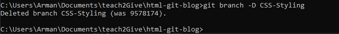

- Get Started
- What is Git?
- Installing Git
- Get Started
- What is Git?
- Installing Git
- Configuring Git
- Initializing a git repository
- Adding Files to the Staging Area
- Committing Changes
- Committing Changes
- Branches
- Branches
- Creating branches
- Creating branches
- View all branches
- Switching between branches
- Merging a branch
- Deleting a branch
- Next steps
- Learn how to use remote repositories with Github and Gitlab
- Practice making pull requests and collaborating with others
- Explore advanced command such as
stashandrebase - Use git inside code editors like VSCode
To begin, create a folder for your project. Inside that folder, create all necessary files and folders. Use any code editor like VS Code, Sublime Text, or Atom to edit your files.
Git is a distributed version control system (VCS) that helps developers track changes in their code over time. It allows multiple developers to collaborate without overwriting each other’s work and provides the ability to revert to previous versions of a project.
This blog will focus on using Git and its popular hosting platform, GitHub.
To check if Git is installed on your computer, open your terminal or command prompt and run:
git --versionIf Git is not installed, download and install it from
https://git-scm.com/downloads
Follow the instructions for your operating system (Windows, macOS, or Linux).
To begin, create a folder for your project. Inside that folder, create all necessary files and folders. Use any code editor like VS Code, Sublime Text, or Atom to edit your files.
Git is a distributed version control system (VCS) that helps developers track changes in their code over time. It allows multiple developers to collaborate without overwriting each other’s work and provides the ability to revert to previous versions of a project.
This blog will focus on using Git and its popular hosting platform, GitHub.
To check if Git is installed on your computer, open your terminal or command prompt and run:
git --versionIf Git is not installed, download and install it from
https://git-scm.com/downloads
Follow the instructions for your operating system:
After installing Git, configure your identity with the following commands:
git config --global user.name "Your Name"
git config --global user.email "you@example.com"
This configuration will associate your commits with your name and email address.
A Git repository is where Git stores your project’s history. To start using Git in a folder, run the following command inside the folder:
git init
This creates a hidden .git folder that tracks changes in your project.
The staging area is a place where you prepare files before committing them. To add a specific file to the staging area, use:
git add filename
To add all files at once:
git add .
Once files are staged, commit them using:
git commit -m "descriptive commit message"Commit messages should be meaningful and concise. For example:
git commit -m "Add login form and validation"To view your commit history: =======
Once files are staged, commit them using:
git commit -m "descriptive commit message"
Commit messages should be meaningful and concise. For example:
git commit -m "Add login form and validation"
To view your commit history:
git log
Branches in Git allow you to work on different features or versions of a project separately.
This way, you can experiment without affecting the main codebase.
Once changes are ready, they can be merged back.
To create a new branch:
git branch CSS-StylingThis creates a new branch called CSS-Styling
To create a new branch:
git branch CSS-Styling
This creates a new branch called CSS-Styling.
To see all branches in your repository and check which one is currently active:
git branch
The active branch will be highlighted with an asterisk *.
To switch to another branch:
git checkout branch-name
This updates your working directory to match the selected branch.

To merge changes from one branch into the current branch:
git merge branch nameThis incorporates the changes from the named branch into the branch you're currently on. 
Once a feature branch is merged, you can delete it to keep things tidy:
git branch -d branch-nameUse -D instead of -d if the branch hasn’t been merged yet and you want to force-delete it. 
Keep practicing, you got this
Hehe, you made it to the end of this git-essntials tutorial.
I am proud of you King and Queen. Happy Coding